Grupo Verto5 is a subcontracting and outsourcing company serving businesses across Spain, based in Bilbao. It places managed, supervised teams on construction sites, factories, warehouses and service operations, with CAE and health-and-safety paperwork in order.
Grupo Verto5 is the trading name of four companies (Grupo Verto 5 (FIVE) SL, Construcciones y Proyectos Alovar Cinco SL, Pintura Shizukani SL and Cerrajería y Cristal Shizukani SL) providing subcontracting and outsourcing services to businesses across Spain. Based in Bilbao with offices in Madrid, Málaga, Barcelona and Zaragoza, it mobilises its own teams with direct supervision and full CAE and health-and-safety compliance.
Turnkey work packages
Unit-price contracts
Outsourcing at the client's site
Teams for peaks and seasons
REA (Law 32/2006) · CAE · Health and safety · Liability insurance
Our own supervisors on every site and every shift. The client always knows who is working, where, and how the project is going.
REA, CAE, health and safety and liability insurance in order before we start. No surprises in the paperwork.
Teams from 5 to more than 60 people, anywhere in Spain, for whole projects or for workload peaks.
| Web | grupoverto5.com |
| clientes@grupoverto5.com | |
| Phone | +34 641 90 42 42 |
| Address | C/ Barroeta Aldamar 4, 5º dpto. 52 · 48001 Bilbao |
Grupo Verto5 is the shared trading name of these companies. Every quote and invoice names the company that issues it.